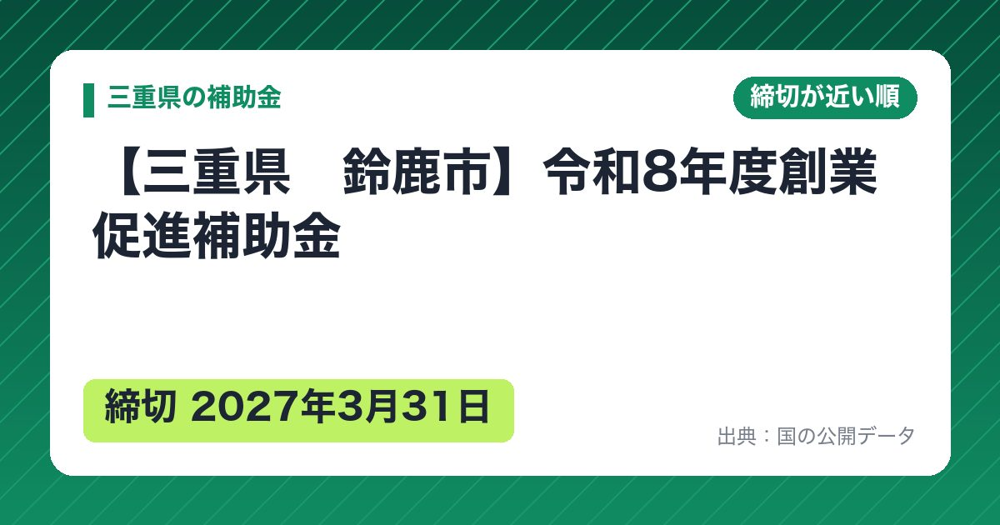

【三重県 鈴鹿市】令和8年度創業促進補助金

締切 2027年3月31日｜上限 30万円
鈴鹿市での新たなスタートを応援！創業時の初期経費を最大30万円サポート
概要
| 対象地域 | 鈴鹿市内の店舗又は事務所での開設・事業実施に限る。申請日において鈴鹿市内に住民登録があり、今後も居住する意思が必要。 |
|---|---|
| 補助上限額 | 30万円 |
| 補助率 | 2分の1（1,000円未満切捨て） |
| 受付期間 | 2026年3月31日 〜 2027年3月31日 |
| 対象の従業員数 | 従業員数の制約なし |
| 利用目的 | 新たな事業を行いたい |
| 対象業種 | 建設業 / 製造業 / 電気・ガス・熱供給・水道業 / 情報通信業 / 複合サービス事業 / サービス業（他に分類されないもの） / 分類不能の産業 / 鉱業、採石業、砂利採取業 / 運輸業、郵便業 / 卸売業、小売業 / 不動産業、物品賃貸業 / 学術研究、専門・技術サービス業 / 宿泊業、飲食サービス業 / 生活関連サービス業、娯楽業 / 教育、学習支援業 / 医療、福祉 |
| 実施機関 | 【三重県鈴鹿市】創業促進補助金 |
公募の内容（原文の抜粋）
■目的・概要
創業時の経営基盤の安定化を図るとともに、市内における創業を促進するため、事業を営んでいない市民の方が令和7年4月1日以降に市内で新たに創業し、「特定創業支援等事業による支援を受けたことの証明」を有する場合に、創業に要する初期経費の一部を補助する制度です。
■応募資格
以下の要件をすべて満たす方が対象となります。
・鈴鹿市から「特定創業支援等事業による支援を受けたことの証明」を受けた者
・令和7年4月1日以降に鈴鹿市内で中小企業信用保険法施行令第1条に規定する業種の事業を創業した者
・申請日において鈴鹿市内に住民登録があり、かつ、今後も市内での居住の意思がある者
・市税の滞納がない者
・政治的活動又は宗教的活動を目的とするものでない事業を開始した者
・風俗営業等の規制及び業務の適正化等に関する法律の規定による許可又は届出を要するものでない事業を開始した者
・関係法令に違反するものでない事業を開始した者
・創業に当たり、国又は県の創業を目的とした補助金の交付を受けていない者
・創業・再挑戦アシスト資金に係る保証料の補給を受けていない者
・過去に創業促進補助金の交付を受けていない者
■地理条件
申請日において三重県鈴鹿市内に住民登録があり、今後も市内での居住の意思があること。また、鈴鹿市内で創業すること。
■備考
・補助金の申請は、創業日から1年以内に行う必要があります。
・補助金の対象となる経費は、創業日の1年前から創業日までに納品が完了しており、1件あたり1万円以上（税抜）であるものに限ります。
・補助金は予算で定める範囲内において交付され、申請順に受け付けられます。
■問合せ先
鈴鹿市役所 産業振興部 商業振興課（7階 73番窓口）
〒513-8701 三重県鈴鹿市神戸一丁目18番18号
電話番号：059-382-9016
ファクス番号：059-382-0304
■参照URL
https://www.city.suzuka.lg.jp/sangyo/shien/1014188.html
申請前の準備
- GビズIDプライム（電子申請に必須・無料・発行まで1〜2週間かかることあり）：gbiz-id.go.jp
- 直近の決算書（個人事業主は確定申告書の控え）
- 事業計画（何に使い、どう売上・生産性が上がるか）
- 見積書（買う物・頼む工事の）
創業の補助金は、開業届・法人設立と、入金を受ける事業用の口座が先に必要になることが多いです。
広告準備に使えるサービス：
・会社設立を無料で始めるなら【弥生のかんたん会社設立】  （会社を作る手続きを無料でまとめて作れる）
（会社を作る手続きを無料でまとめて作れる）
・業界最安級の手数料で法人口座を即日開設！【ラクスルバンク】  （補助金の入金先になる法人口座をネットで開設）
（補助金の入金先になる法人口座をネットで開設）
三重県のほかの補助金
- 令和７年度（補正） 商用車等の電動化促進事業（建設機械）（締切 2027年1月29日）
- 四日市市中小企業脱炭素経営支援事業費補助金（締切 2027年3月31日）
- 四日市市燃料電池自動車導入促進補助金（締切 2027年3月31日）
- 携帯電話等エリア整備事業（締切 2027年3月31日）
- 電波遮へい対策事業（トンネル）（締切 2027年3月31日）